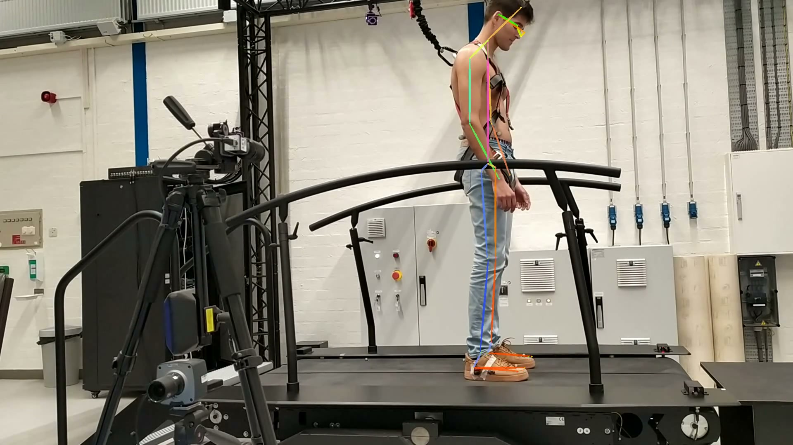
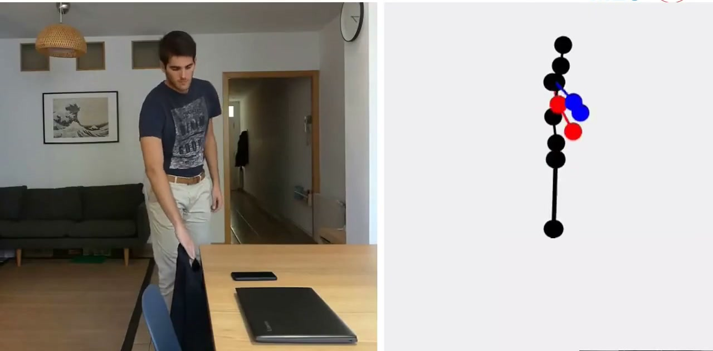

Project videos available: A full version of this portfolio containing videos for the projects is available at
biomechatronicsrookie.github.io.
Core Areas
Robotics Controls
Computer Vision
Wearable Sensing
Biomechatronics
Embedded Systems
Clinical Monitoring
Selected Projects
GableCORE
Robotics Control Architecture
The GableCORE is a novel gait rehabilitation platform aimed to give maximum freedom to it's users while still rendering a safe, reliable environment to relearn how to walk. In this project's context, I am currently the main robotics developer of the GableCORE, acting as software engineer, hardware engineer, technician and commisioning engineer. The main idea behind the GableCORE is the use biomechanical data extracted through computer vision to render an adpative haptic space that will help the patient keep balance during relearning to walk after a major motor disfunction.
Project page
Towards a Digital Biomarker for Postural Instability in Parkinson's Disease
Computer Vision and Clinical Digital Biomarkers
Developed objective and standardized biomarker extraction workflows to support clinical monitoring of postural instability progression in Parkinson's disease.
This work addresses limitations of subjective, manually administered assessments by providing reproducible quantitative indicators that can support treatment personalization and longitudinal follow-up.
Project page

ArmTracker
Wearable Sensing for Rehabilitation
Built and evaluated a non-obtrusive wearable sensing system for long-term, multi-segment arm kinematics tracking in daily-life settings to support personalized rehabilitation.
Unlike wrist-only monitoring approaches, ArmTracker captures richer upper-limb movement information over extended periods, enabling more precise activity profiling and better-informed therapy planning.
Project page

Test Engineer - Marine Fleet
Systems Validation and Reliability
Contributed to test planning and execution workflows that support safer operations, traceable issue reporting, for the commissioning team in the context of the Fehmarnbelt Project
Project page
Publications
A Stiffness-Fault-Tolerant Control Strategy for an Elastically Actuated Powered Knee Orthosis
R. J. Velasco-Guillen et al., BioRob 2020 (IEEE RAS/EMBS).
DOI: 10.1109/BioRob49111.2020.9224403
Development and Pilot Evaluation of the ArmTracker: A Wearable System to Monitor Arm Kinematics During Daily Life
V. A. Carmona-Ortiz et al., BioRob 2020 (IEEE RAS/EMBS).
DOI: 10.1109/BioRob49111.2020.9224302